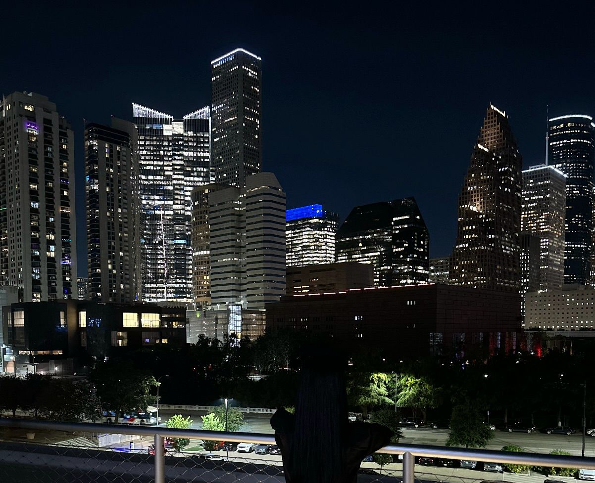

Hi, I'm Mita. A Frontend Explorer dedicated to turning complex code into beautifully responsive, lightning-fast digital solutions. Welcome to my creative space.

A curated showcase of my frontend development journey.
A sleek task management app featuring custom local storage, filters, and beautiful interactive state animations.
A gorgeous glassmorphic calculator built with highly precise mathematical logic and an ultra-modern dark theme.
My current advanced project showcasing utility-first styling, grid layouts, and advanced responsiveness.
Have a brilliant project idea or just want to say hi? Drop a message and let's build something incredible together.